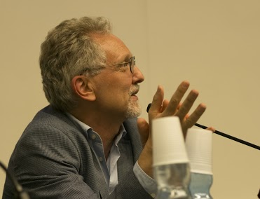

Prof. Enrico Pasini
Università degli Studi di Torino
,
Dipartimento di Filosofia e Scienze dell'Educazione
Via S. Ottavio 20
10125 Torino IT
Links:
Personal page on the fMOD site
Profile page on hcommons.org
Journal of Interdisciplinary History of Ideas
Publications